A PH private -key demonstration
Suppose 'Alice' wishes to send the message ' Hi Bob, let's meet ' to 'Bob' using P-H. This is what they do:
> p := nextprime(10^70 + rand()); # step 1
> e := nextprime(10^15);
> igcd(e, p-1); # testing that '2' holds
>
igcdex(e, p-1, 'x', 'y'):
d := x mod (p-1); # Step 3, finding 'd'
>
Here - just to let you see - is ed :
> e*d;
>
And see that
ed
does leave remainder 1 on division by
(
 ):
):
> e*d mod (p-1);

>
Next, Alice converts her message to a number:
> Anum := to_number(`Hi Bob, let's meet. Alice`);
> length(Anum);
>
Alice then encrypts that number (she lays on her coat of paint, as it were) by calculating the remainder (the least positive one) that
 leaves
on division by
p
. I'll call the resulting number
Asend
, since it's that number Alice sends to Bob.
That
is a
remarkable
calculation, as I would like to demonstrate. First see how Maple
computes powers; I'll illustrate with
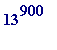
(which has 1003 digits;
in my live presentation I'll vary
that to
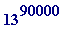
- which has 100,255 digits - but won't leave that output when placing this worksheet on my web site):
leaves
on division by
p
. I'll call the resulting number
Asend
, since it's that number Alice sends to Bob.
That
is a
remarkable
calculation, as I would like to demonstrate. First see how Maple
computes powers; I'll illustrate with
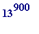
(which has 1003 digits;
in my live presentation I'll vary
that to
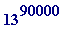
- which has 100,255 digits - but won't leave that output when placing this worksheet on my web site):
> 13^900;
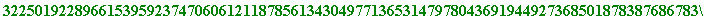
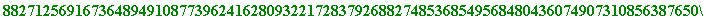
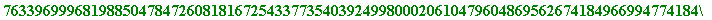
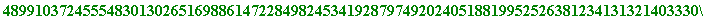
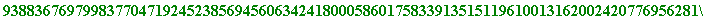
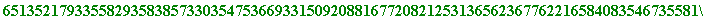
>
But see what happens if we try to compute 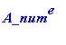 :
> Anum^e;
Error, integer too large in context
>
Hardly a surprise, since
has billions upon billions of digits, and Maple can only compute powers up to a couple of million digits. It is something of a
minor miracle
that one can quickly compute
the remainder that
leaves on division by
p
,
without
computing
 itself (the mathematics involved uses
congruences
,
together with the so-called
square-and-multiply
method,
invoked by the '&' in the following Maple command):
itself (the mathematics involved uses
congruences
,
together with the so-called
square-and-multiply
method,
invoked by the '&' in the following Maple command):
> Asend := Anum&^e mod p;
>
In passing let us observe the text equivalent of that encrypted number; it is just meaningless junk (I may have to recompute with another 'p' should there be a '00' in that string in the wrong position):
> from_number(Asend);
>
And this is what Bob does to read Alice's message: he decrypts (he strips off the disuising coat of paint, as it were) by calculating the remainder (again the least positive one) that
leaves on division by
p.
The
connection between
e
,
d
, and
(
 )
in requirement #3, together with the mathematics of Fermat's
little
theorem (if
p
is any prime, and
a
is any integer not divisible by
p
, then
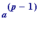
leaves remainder 1 on division by
p
) -
gaurantees
that the outcome is the numerical form of the
original
text:
)
in requirement #3, together with the mathematics of Fermat's
little
theorem (if
p
is any prime, and
a
is any integer not divisible by
p
, then
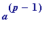
leaves remainder 1 on division by
p
) -
gaurantees
that the outcome is the numerical form of the
original
text:
> Bsee := Asend&^d mod p;
> from_number(Bsee);
>
Wonderful, yes?
(actually it's entirely elementary when you know the mathematics)
In responding to Alice, Bob may encrypt using either power (of course in practice Alice and Bob should agree in advance on this), meaning that he may encrypt using the decryption power, as I'll quickly demonstrate:
> Bnum := to_number(`Thanks Alice. Where? When? Bob`);
> length(Bnum);
> Bsend := Bnum&^d mod p; #NOTE the 'd' power
>
Alice receives B_send, and then:
> Asee := Bsend&^e mod p; # NOTE the 'e' power
> from_number(Asee);
>
Two final, quick points:
- SECURITY. It should be obvious that both Alice and Bob must keep their 'keys' - ( e , p ) and ( d , p ) - secret: anyone who knows ( e , p ) may immediately compute d (using the extended Euclidean algorithm), or anyone who knows ( d , p ) may immediately compute e
- SIZE OF TEXT. If the numerical form (Anum or Bnum) of either text is greater than p , then it must be broken down into numbers each having numerical value less than p (think about that to see why...)